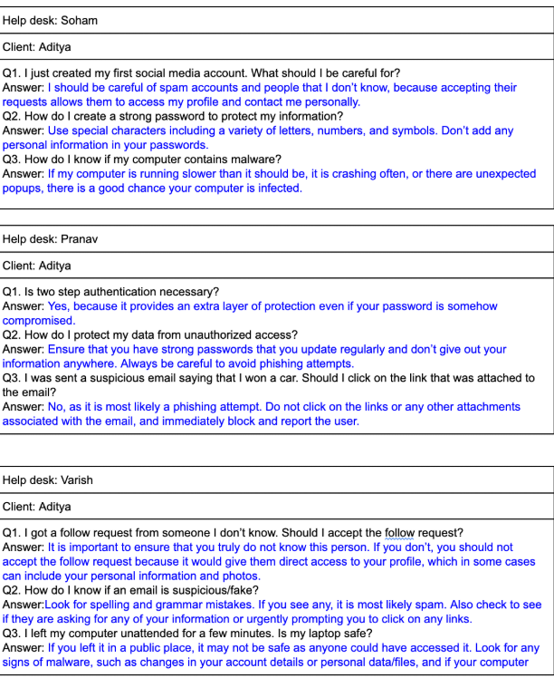
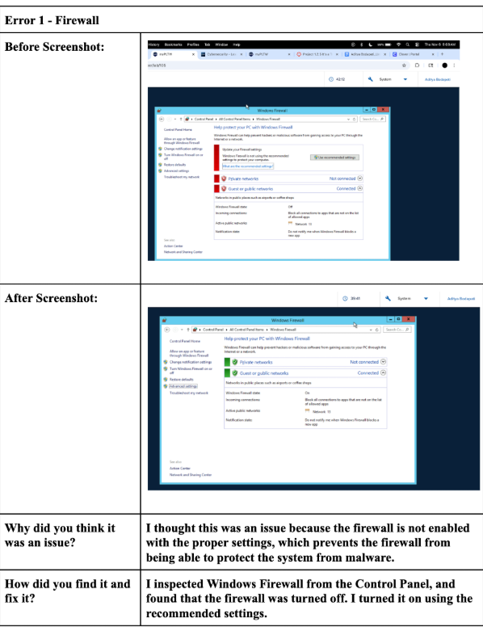

My Projects
All About Table Tennis

Course: CSE
Duration: Around 3 weeks
Objective: Create an app based on a extracurricular activity or school club
The objective of Project 1.1.6 was to create an app based on a school club or sports team. I chose to make an app based on the DHS Table Tennis/PickleBall club that taught users how to play table tennis. The app contains a home page and a table of contents that takes you to different pages about the different rules of table tennis, vocabulary used in the game, and the history of table tennis. This app can be used for beginners who are new to this game and have just started learning about it. My contribution during the creation of this app was designing the layout of the app and coding the different features. Throughout this project, I was able to become familiar with pair programming and planning/creating a project with a partner, which prepares for the future when I work on bigger coding projects with a team. Rather than creating projects using a set of instructions already given to us, this project allowed us to use our creativity and create our own app using what we previously learned. We also chose our own topics, which allowed us to pick a topic that we are familiar with and a topic that we enjoy. As the driver for this assignment, I enjoyed being able to take the lessons I learned in the previous assignments and use them to create an app using my own creativity. Here is a link to my documentation for this project.
Project 2.1.5 Map It, Drive It

Course: CSE
Duration:1 month
Objective:Create an algorithm that can be used on any grid to determine the shortest path to get the robot from start to finish
The objective of Project 2.1.5 was to create an algorithm to drive the robot from start to finish using the shortest path, while avoiding obstacles along the way. There were 9 different grids, and our algorithm had to work for any grid. This project was more difficult than we expected it to be, because it required us to do outside research and learn about different algorithms, such as the wavefront algorithm and the BFS algorithm. Our algorithms ran into several errors along the way and we had a lot of debugging to do throughout the development process, so this project taught me a lot about communication and working with others because I spent a lot of my time discussing with my peers and thinking of different ways to approach this project and meet our goal. Working on this project gave me experience for working in a real job. I had to work with my peers, create plans to map out the different tasks I had and how long each task would take, and working to meet deadlines. Here is a link to my documentation for this project.
pHishy Fish Tank

Course: AP CSP
Duration: Around 2 weeks
Objective: Perform analysis for a client that has security vulnerabilties
The objective of this project was to perform analysis for a client that has security vulnerabilties. This is a project that stood out to me because I am pursuing a career in cybersecurity. In this project, we had to look through several files to identify what the vulnerabilities were and what caused the user problems. Then, we solved those issues and practiced writing client reports to explain the problems to the users without using technical terms. In these client reports, we also explained how security breaches occur and what security measures they can take to protect their data, such as strong passwords and two factor authentication. We also documented our development process to show how we solved each issue.
Hangman

Course: AP CSP
Duration: Around 2 weeks
Objective: Design a hangman game with our own theme
The objective of this project was to design a hangman game of our own theme. As someone who is interested in game designing, this project appealed to me specifically. Although this project seems pretty basic, it allowed us to practice the fundamentals of game designing such as planning out the different features of the game, UI/UX design, making the interface user friendly and easy to use, and making the overall game entertaining. We also had documentation that tracked our development process and the progression of the game throughout our project.
Sell My Pet Food

Course: AP CSA
Duration: Around 3 weeks
Objective: Create a program that reads through social media posts to identify pet owners in order to find potential customers to send them targeted advertisements for cat and dog food
One of the projects that stood out to me this year involved building a program that scans social media posts to find pet owners, with the goal of sending them targeted ads for cat and dog food. It was a great learning experience, especially as we worked with Jsoup to dive into web scraping. Along the way, we not only picked up the technical skills but also discussed the legal and ethical sides of scraping data from websites. We used contextual and sentiment analysis to sift through large amounts of content, which really helped strengthen my Java programming skills. This project felt like something that could be used in the real world, especially in marketing and advertising, and gave me a better understanding of how data and code come together to solve practical problems. We also documented our development process to show how we approached this project and the different steps we took to complete it.
Game of Nim

Course: AP CSA
Duration: Around 1 month
Objective: Recreate the Game of Nim in Java
Another project I worked on was recreating the classic game of Nim using Java. This project was all about taking the core logic of the game and turning it into a working program from scratch. It was a great exercise in problem-solving, but also in applying key object-oriented programming principles like abstraction and encapsulation. I broke the game down into smaller, manageable components like players, turns, and game rules. I used classes and methods to keep everything organized and modular. This made the code easier to read, test, and update. Rebuilding something based on logic rather than copying it step-by-step really helped me understand how to structure programs effectively and think like a developer. We also documented our development process to show how we approached this project and the different steps we took to complete it.
Save the Day
Course: Cybersecurity
Duration: Around 1 week
Objective: Role play as members of a help desk team and as co-workers with security concerns.
In this project, I roleplayed as a help desk team member to learn cybersecurity best practices and how to protect online information. I worked with my team to create and answer common cybersecurity questions, helping others identify vulnerabilities and secure their devices. We also roleplayed as help desk members and clients to explore a wider range of cybersecurity issues and solutions, documenting our thoughts. Finally, we reflected on our teamwork and researched cybersecurity careers and their education and certification requirements. Through this project, I learned how teamwork, communication, and cybersecurity knowledge work together to protect digital information.
It's a Trap!
Course: Cybersecurity
Duration: Around 2 weeks
Objective: Identify and fix vulnerabilities in a compromised computer system
In this project, I roleplayed as a cybersecurity analyst securing a compromised system by identifying and fixing vulnerabilities. I examined suspicious files and processes and updated firewall and port rules to block unauthorized traffic. I created a step-by-step action plan and documented my findings with explanations and screenshots before and after the vulnerabilities were fixed. Through this project, I learned how to identify system vulnerabilities, scan files with antivirus software, and properly configure firewall settings to protect a device.